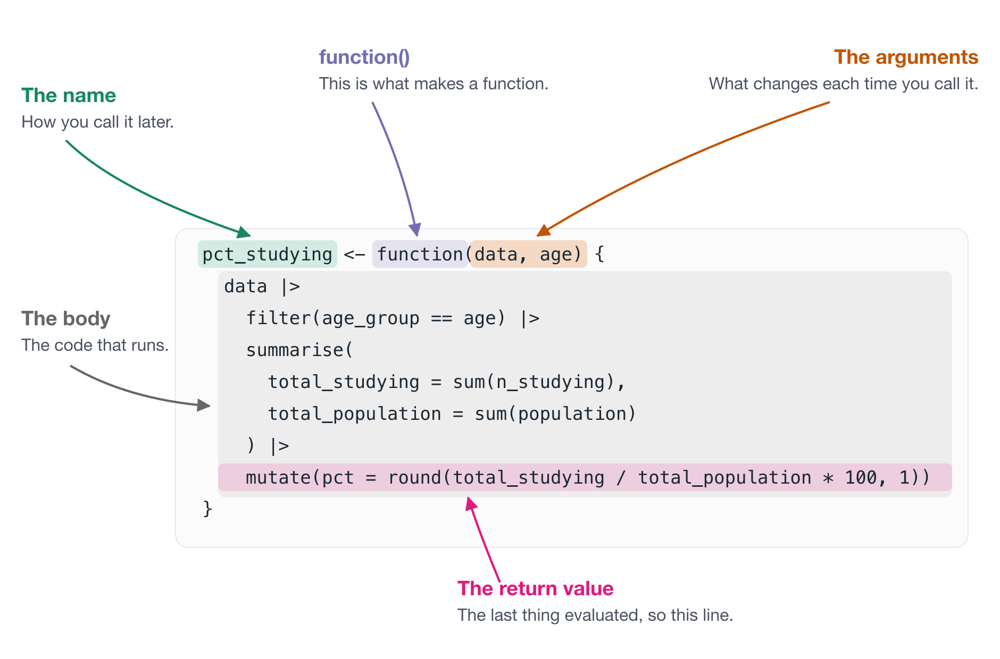
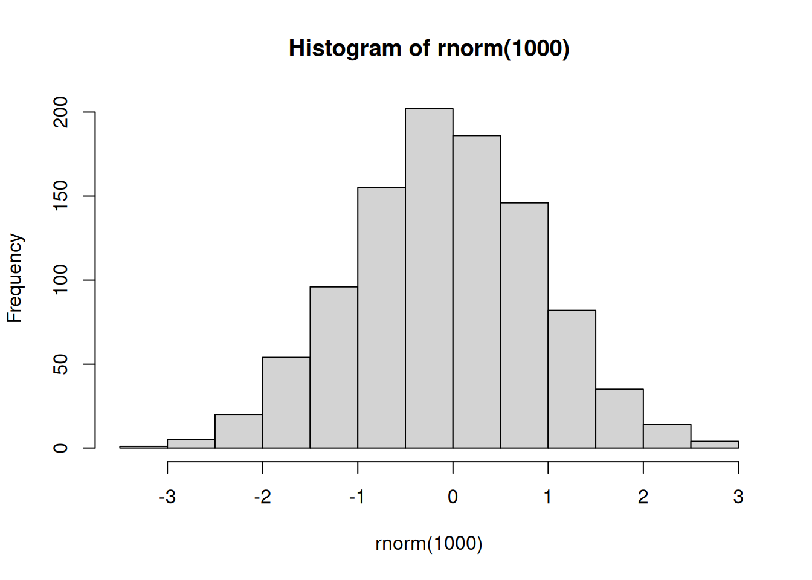
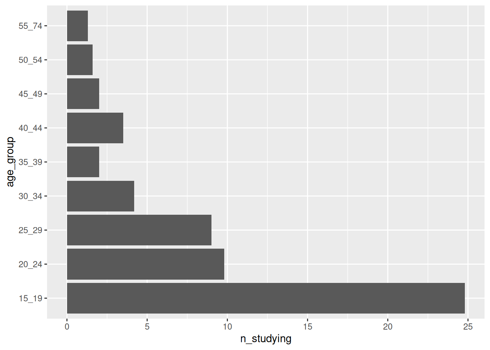
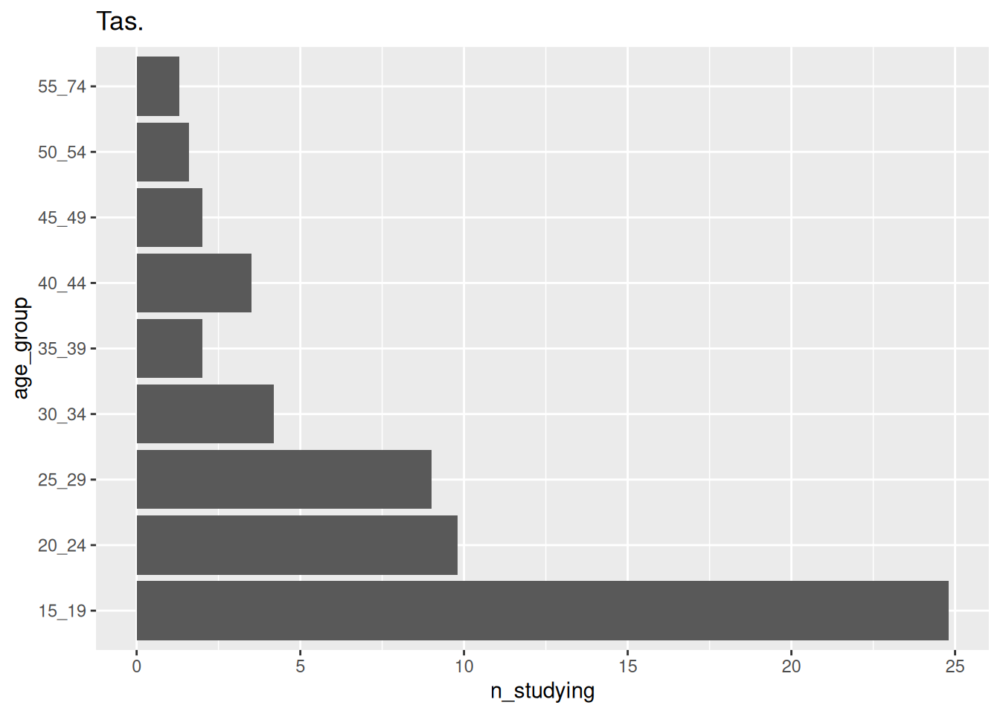
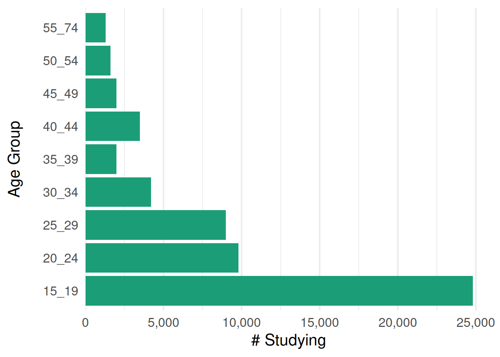
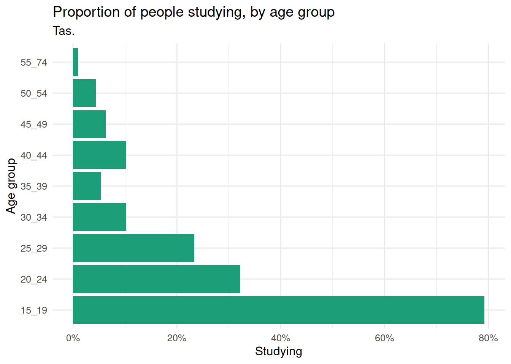
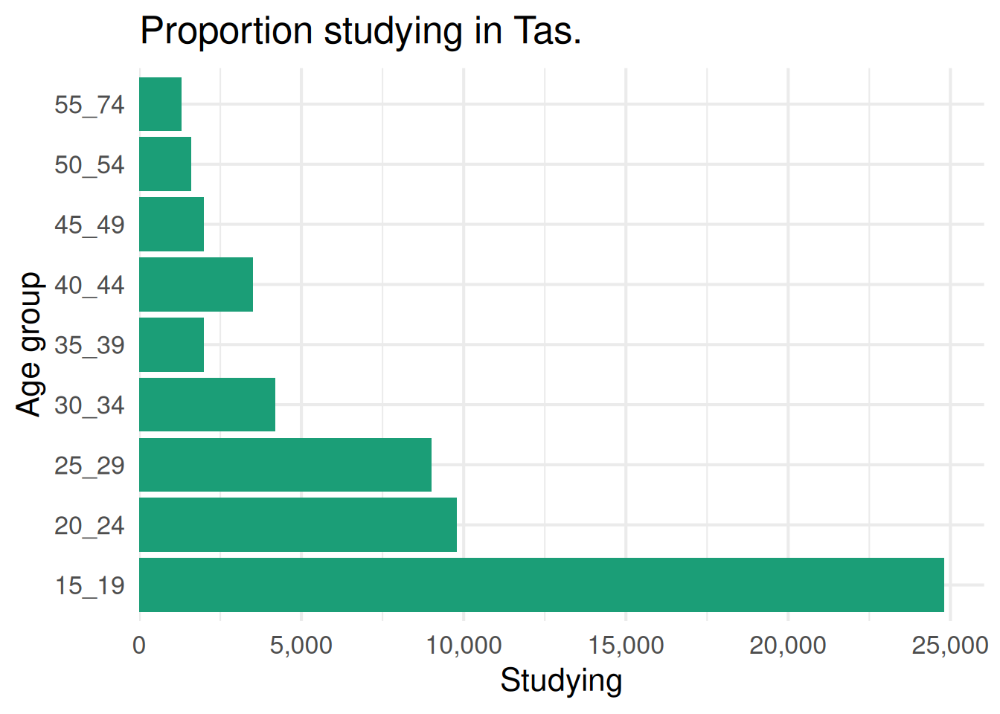
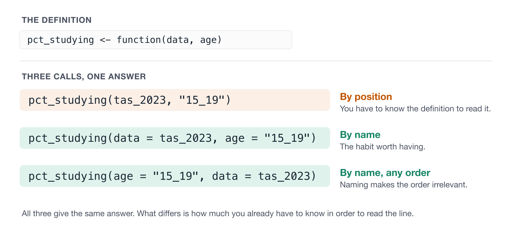
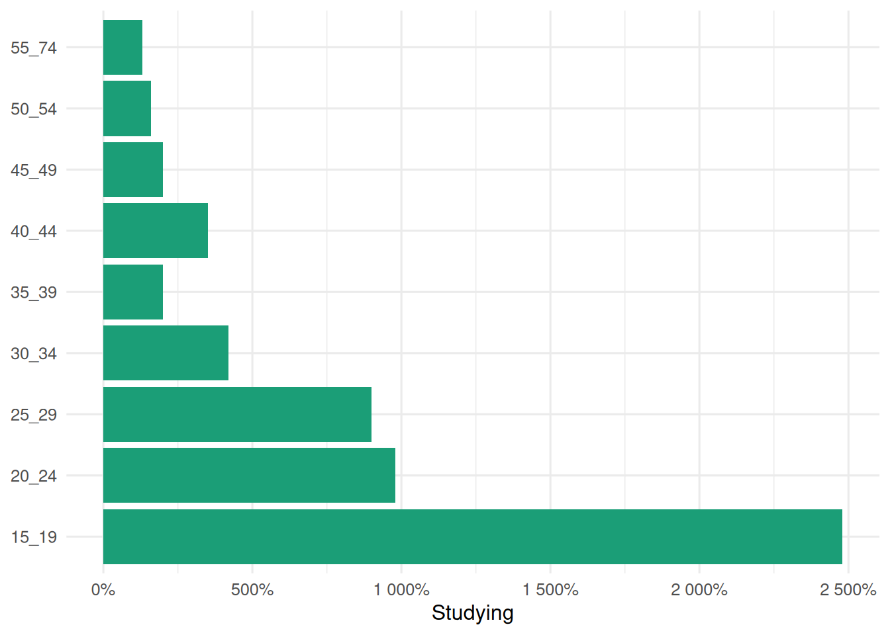
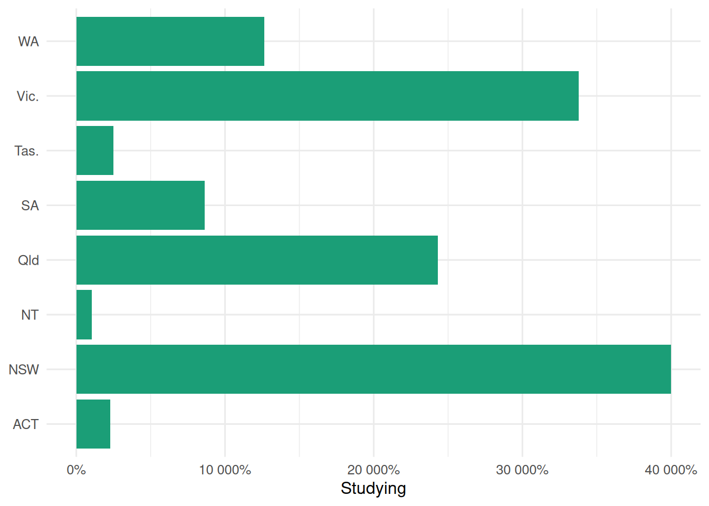

2 Anatomy of a function
This chapter goes into a bit more depth on the naming of different parts of a function, and some other bits and pieces. Knowing the names of these things helps set you up to understand them better because you can look them up, ask an LLM, and read the help page (which is where I recommend you start!)
We also touch on some more practical ideas - like how to use functions with packages like ggplot and dplyr. There are some tricky things there, which I hope will be a little bit clearer
Overview
Duration 60 minutes
Questions
- What are the parts of a function called?
- How do I give an argument a sensible default?
- How do I pass values in, and does the order matter?
- How do I use functions that work with packages like ggplot and dplyr?
- How do I choose a good function name?
What you need this session
- A session of RStudio open, in the same folder as last time
- The following R packages:
education_path <- function(year) {
here(glue("data/tidy/education_{year}.csv"))
}
year_from_path <- function(path) {
basename(path) |>
parse_number() |>
as.character()
}
read_education <- function(year) {
files <- education_path(year)
education_raw <- read_csv(files, id = "path")
education_raw |>
mutate(year = year_from_path(path)) |>
select(-path)
}
education <- read_education(2014:2023)
ed_2023 <- education |>
filter(year == 2023)
tas_2023 <- education |>
filter(year == 2023, state_territory == "Tas.")
plot_study_by <- function(data, y) {
ggplot(data, aes(x = n_studying, y = {{ y }})) +
geom_col(fill = "#1B9E77") +
scale_x_continuous(labels = label_number(scale = 1000, big.mark = ","),
expand = expansion(mult = c(0, 0.05)), limits = c(0,NA)) +
labs(x = "# Studying", y = "Age Group") +
theme_minimal(base_size = 16) +
theme_sub_panel(grid.major.y = element_blank()) +
theme_sub_axis_y(title = element_text(margin = margin(r = 20)))
}2.1 What we are making
Today we are focussing on two key functions, and the plots they make.
Let’s get some of the data ready:
ducation_path <- function(year) {
here(glue("data/tidy/education_{year}.csv"))
}
year_from_path <- function(path) {
basename(path) |>
parse_number()
}
read_education <- function(year) {
files <- education_path(year)
education_raw <- read_csv(files, id = "path")
education_raw |>
mutate(year = year_from_path(path)) |>
select(-path)
}
education <- read_education(2014:2023)Rows: 720 Columns: 6
── Column specification ────────────────────────────────────────────────────────
Delimiter: ","
chr (2): state_territory, age_group
dbl (3): n_studying, population, prop_studying
ℹ Use `spec()` to retrieve the full column specification for this data.
ℹ Specify the column types or set `show_col_types = FALSE` to quiet this message.# A tibble: 72 × 6
state_territory age_group n_studying population prop_studying year
<chr> <chr> <dbl> <dbl> <dbl> <dbl>
1 ACT 15_19 22.9 25.8 0.888 2023
2 ACT 20_24 17.1 35.2 0.486 2023
3 ACT 25_29 7.5 40.1 0.187 2023
4 ACT 30_34 3.6 40 0.09 2023
5 ACT 35_39 3.5 36.8 0.0951 2023
6 ACT 40_44 3.6 34 0.106 2023
7 ACT 45_49 1.2 28.8 0.0417 2023
8 ACT 50_54 0.9 27.1 0.0332 2023
9 ACT 55_74 1.5 79.1 0.0190 2023
10 NSW 15_19 400. 487. 0.820 2023
# ℹ 62 more rows# A tibble: 9 × 6
state_territory age_group n_studying population prop_studying year
<chr> <chr> <dbl> <dbl> <dbl> <dbl>
1 Tas. 15_19 24.8 31.3 0.792 2023
2 Tas. 20_24 9.8 30.4 0.322 2023
3 Tas. 25_29 9 38.6 0.233 2023
4 Tas. 30_34 4.2 41.1 0.102 2023
5 Tas. 35_39 2 37.1 0.0539 2023
6 Tas. 40_44 3.5 34.2 0.102 2023
7 Tas. 45_49 2 32 0.0625 2023
8 Tas. 50_54 1.6 36.7 0.0436 2023
9 Tas. 55_74 1.3 143. 0.00907 2023And now let’s demonstrate these plotting functions:
This is just one function, with two pretty different plots! The number studying for each age group, or for each state. The thing that changed is what variable goes on the y axis.
This can be tricky! Have you ever tried to write a function around dplyr or ggplot2? We will talk through how to solve this.
Now, the anatomy of a function.
2.2 The Anatomy of a function
Let’s answer a question with the data you read in last session. What percentage of 15 to 19 year olds are studying?
# A tibble: 1 × 3
studying people pct
<dbl> <dbl> <dbl>
1 1252. 1542. 81.2What if we want this to be for any age group?
Like I want to be able to write code that looks like this:
We can express this as a function:
# A tibble: 1 × 3
studying people pct
<dbl> <dbl> <dbl>
1 340. 1880. 18.1Here are the key parts:
- The name is
pct_studying. This is how you call it later. function()is what makes a function. Thepct_studying <-bit just gives it a name, the same way you’d name any other object.- The arguments are
dataandage. These are the parts that change between calls. - The body is everything between the braces. This is the code that runs. When we use single braces like this, we are saying: Run multiple lines of code.
- The return value is whatever the body evaluates last, so here that is the one row table coming out of
mutate().
The signature is the name plus the argument names: pct_studying(data, age).

A side effect is anything a function does other than return a value.
education_path(), which you wrote last session, does not have a side effect. It works something out and hands it back:
This function does have a side effect:
Because it plots to the screen. hist() also returns a value:

$breaks
[1] -3.5 -3.0 -2.5 -2.0 -1.5 -1.0 -0.5 0.0 0.5 1.0 1.5 2.0 2.5 3.0
$counts
[1] 1 5 20 54 96 155 202 186 146 82 35 14 4
$density
[1] 0.002 0.010 0.040 0.108 0.192 0.310 0.404 0.372 0.292 0.164 0.070 0.028
[13] 0.008
$mids
[1] -3.25 -2.75 -2.25 -1.75 -1.25 -0.75 -0.25 0.25 0.75 1.25 1.75 2.25
[13] 2.75
$xname
[1] "rnorm(1000)"
$equidist
[1] TRUE
attr(,"class")
[1] "histogram"Side effects aren’t bad, and plenty of useful functions have them. All of ggplot2 is drawing a plot, which is a side effect.
The catch is reasoning. We only want functions to do one thing, generally. Return one plot. Return a data frame. Once functions start returning multiple things, it can be harder to reason with them.
So, in the case of hist(), it might be better to have two functions:
hist_plot()which does the histogram plottinghist_data()which gives us the statistics, etc
A function that returns something useful and quietly writes a file is harder to think about than one that does a single one of those things.
An argument can be a function. You hand it over without brackets, the same way you would hand over a number.
[1] 42.54[1] 407.6We are not calling mean there, we are passing it to the function. There are many powerful usecases of this. We will touch more on them later. For now, just know this kind of thing is possible.
What do these functions return? Have a think about it, then run them and see!
my_summary2 <- function(values){
summary_values <- list(
min = min(values, na.rm = TRUE),
q1 = quantile(values, probs = 0.25, na.rm = TRUE),
median = median(values, na.rm = TRUE),
mean = mean(values, na.rm = TRUE),
q3 = quantile(values, probs = 0.75, na.rm = TRUE),
max = max(values, na.rm = TRUE)
)
}
# try running this with
# my_summary2(ed_2023$n_studying)Takehomes
- The key parts of a function are: the name, the arguments, the body, the return value
- A function returns whatever its body evaluates last
- The signature is the name plus the argument names
- Knowing the words means you can search for them and ask about them
2.3 Default values
Functions can have default values. You’ve already seen one. Let’s explore defaults using plots.
# A tibble: 9 × 6
state_territory age_group n_studying population prop_studying year
<chr> <chr> <dbl> <dbl> <dbl> <dbl>
1 Tas. 15_19 24.8 31.3 0.792 2023
2 Tas. 20_24 9.8 30.4 0.322 2023
3 Tas. 25_29 9 38.6 0.233 2023
4 Tas. 30_34 4.2 41.1 0.102 2023
5 Tas. 35_39 2 37.1 0.0539 2023
6 Tas. 40_44 3.5 34.2 0.102 2023
7 Tas. 45_49 2 32 0.0625 2023
8 Tas. 50_54 1.6 36.7 0.0436 2023
9 Tas. 55_74 1.3 143. 0.00907 2023
Should we make that code above a function? My feeling is: probably not.
My reasons:
- ggplot expressed itself well
- I’m unlikely to run the same thing again
- There isn’t that much code - so I can understand what it is expressing easily
We don’t need to always “make everything a function”.
Like, I’m not sure if we would get out of a function like so:

But what might tip the balance towards creating a function is if we were really tinkering with a lot of the plotting options. If this plot now does the following:
- The axis labels are column names
- The x axis should be in increments of 1,000
- It could use a title, and a colour that is not battleship grey
- The left axis of the bars should be aligned
ggplot(tas_2023, aes(x = n_studying, y = age_group)) +
geom_col(fill = "#1B9E77") +
labs(x = "# Studying", y = "Age Group") +
theme_minimal(base_size = 16) +
theme_sub_panel(grid.major.y = element_blank()) +
scale_x_continuous(labels = label_number(scale = 1000, big.mark = ","),
expand = expansion(mult = c(0, 0.05)), limits = c(0,NA)) +
theme_sub_axis_y(title = element_text(margin = margin(r = 20)))
Let’s write this as a function - we want to change the data, but have everything else the same
plot_study_by_age <- function(data, state) {
ggplot(data, aes(x = n_studying, y = age_group)) +
geom_col(fill = "#1B9E77") +
labs(x = "# Studying", y = "Age Group") +
theme_minimal(base_size = 16) +
theme_sub_panel(grid.major.y = element_blank()) +
scale_x_continuous(labels = label_number(scale = 1000, big.mark = ","),
expand = expansion(mult = c(0, 0.05)), limits = c(0,NA)) +
theme_sub_axis_y(title = element_text(margin = margin(r = 20)))
}
plot_study_by_age(tas_2023, state = "Tas.")
Now the fiddly decisions live in one place. But look at how you have to call it.
An argument can have a default, which is the value it takes when you do not specify one.
plot_study_by_age <- function(data, state = "Tas.") {
ggplot(tas_2023, aes(x = n_studying, y = age_group)) +
geom_col(fill = "#1B9E77") +
theme_minimal(base_size = 16) +
theme_sub_panel(grid.major.y = element_blank()) +
scale_x_continuous(labels = label_number(scale = 1000, big.mark = ","),
expand = expansion(mult = c(0, 0.05)), limits = c(0,NA)) +
theme_sub_axis_y(title = element_text(margin = margin(r = 20))) +
labs(
x = "Studying",
y = "Age group",
title = "Proportion of people studying, by age group",
subtitle = state
)
}The default here is “Tas.”
The subtitle says “Tas.” and I never typed it, because the default was specified.
We could change that to:
That’s what defaults are for. They make the common case easy without taking away control in the uncommon one.
A default does not have to be a fixed value. It can be worked out from the other arguments, because defaults are evaluated inside the function, after the caller’s values have arrived.
plot_study_titled <- function(
data,
state,
title = glue("Proportion studying in {state}")
) {
ggplot(data, aes(x = n_studying, y = age_group)) +
geom_col(fill = "#1B9E77") +
scale_x_continuous(labels = label_number(scale = 1000, big.mark = ","),
expand = expansion(mult = c(0, 0.05)), limits = c(0,NA)) +
theme_sub_axis_y(title = element_text(margin = margin(r = 20))) +
labs(x = "Studying", y = "Age group", title = title) +
theme_minimal(base_size = 16)
}
plot_study_titled(tas_2023, state = "Tas.")
The title writes itself from state, so the common case needs one argument instead of two.
The catch is that you can now pass two things that disagree, and nothing stops you:
Two arguments that have to agree with each other are a bug waiting to happen. Here it is only a wrong title. When it is a filter and a label, it is a wrong answer with a confident heading on it.
Setup code
library(countdown)
library(dplyr)
library(readr)
library(ggplot2)
library(glue)
library(here)
library(scales)
education_path <- function(year) {
here(glue("data/tidy/education_{year}.csv"))
}
year_from_path <- function(path) {
basename(path) |>
parse_number() |>
as.character()
}
read_education <- function(year) {
files <- education_path(year)
education_raw <- read_csv(files, id = "path")
education_raw |>
mutate(year = year_from_path(path)) |>
select(-path)
}
education <- read_education(2014:2023)
ed_2023 <- education |>
filter(year == 2023)
tas_2023 <- education |>
filter(year == 2023, state_territory == "Tas.")
plot_study_by <- function(data, y) {
ggplot(data, aes(x = n_studying, y = {{ y }})) +
geom_col(fill = "#1B9E77") +
scale_x_continuous(labels = label_number(scale = 1000, big.mark = ","),
expand = expansion(mult = c(0, 0.05)), limits = c(0,NA)) +
labs(x = "# Studying", y = "Age Group") +
theme_minimal(base_size = 16) +
theme_sub_panel(grid.major.y = element_blank()) +
theme_sub_axis_y(title = element_text(margin = margin(r = 20)))
}
pct_studying <- function(data, age = "25_29") {
data_summary <- data |>
filter(age_group == age) |>
summarise(
studying = sum(n_studying),
people = sum(population)
) |>
mutate(pct = round(studying / people * 100, 1))
data_summary
}
pct_studying(ed_2023, age = "25_29")- Call
pct_studying(tas_2023)with noageat all. Which age group did you get? - Ask for an age group that is not in the data, like
"99_99". You should get a number, not an error. What is it?
Answer
# A tibble: 1 × 3
studying people pct
<dbl> <dbl> <dbl>
1 9 38.6 23.3# A tibble: 1 × 3
studying people pct
<dbl> <dbl> <dbl>
1 0 0 NaNThe first is the default, "25_29", which is what you get when you do not say.
The second is the interesting one. No rows match "99_99", so both sums are zero, and zero divided by zero is NaN. No error and no warning.
Takehomes
- A default is the value an argument takes when the caller does not supply one
- Defaults can be worked out from the other arguments
- Give the common case a default, and let people override it
- Two arguments that must agree with each other are a bug waiting to happen
2.4 Arguments by position and by order
Arguments can be given:
- By name
- By position
By name, using name = value:
# A tibble: 1 × 3
studying people pct
<dbl> <dbl> <dbl>
1 24.8 31.3 79.2By position, in the order the definition lists them:
# A tibble: 1 × 3
studying people pct
<dbl> <dbl> <dbl>
1 24.8 31.3 79.2Once they’re named, the order/position doesn’t matter:
# A tibble: 1 × 3
studying people pct
<dbl> <dbl> <dbl>
1 24.8 31.3 79.2# A tibble: 1 × 3
studying people pct
<dbl> <dbl> <dbl>
1 24.8 31.3 79.2And you can mix the two:
# A tibble: 1 × 3
studying people pct
<dbl> <dbl> <dbl>
1 24.8 31.3 79.2All four give 24.8, 31.3, 79.2. What differs is how much you need to already know in order to read the line.

pct_studying(tas_2023, "15_19") needs you to remember what the second slot is for. pct_studying(tas_2023, age = "15_19") tells you.
I leave the first argument positional, because it’s nearly always the data and nobody is confused by it. Everything after that, I name.
Setup code
library(countdown)
library(dplyr)
library(readr)
library(ggplot2)
library(glue)
library(here)
library(scales)
education_path <- function(year) {
here(glue("data/tidy/education_{year}.csv"))
}
year_from_path <- function(path) {
basename(path) |>
parse_number() |>
as.character()
}
read_education <- function(year) {
files <- education_path(year)
education_raw <- read_csv(files, id = "path")
education_raw |>
mutate(year = year_from_path(path)) |>
select(-path)
}
education <- read_education(2014:2023)
ed_2023 <- education |>
filter(year == 2023)
tas_2023 <- education |>
filter(year == 2023, state_territory == "Tas.")
plot_study_by <- function(data, y) {
ggplot(data, aes(x = n_studying, y = {{ y }})) +
geom_col(fill = "#1B9E77") +
scale_x_continuous(labels = label_number(scale = 1000, big.mark = ","),
expand = expansion(mult = c(0, 0.05)), limits = c(0,NA)) +
labs(x = "# Studying", y = "Age Group") +
theme_minimal(base_size = 16) +
theme_sub_panel(grid.major.y = element_blank()) +
theme_sub_axis_y(title = element_text(margin = margin(r = 20)))
}
pct_studying <- function(data, age = "25_29") {
data_summary <- data |>
filter(age_group == age) |>
summarise(
studying = sum(n_studying),
people = sum(population)
) |>
mutate(pct = round(studying / people * 100, 1))
data_summary
}
pct_studying(ed_2023, age = "25_29")- Call
pct_studying()ontas_2023for 20 to 24 year olds, naming both arguments. - Swap the order of those two named arguments. Does it still work?
- Now guess before you run it: does
pct_studying("20_24", data = tas_2023)work?
Answer
# A tibble: 1 × 3
studying people pct
<dbl> <dbl> <dbl>
1 9.8 30.4 32.2# A tibble: 1 × 3
studying people pct
<dbl> <dbl> <dbl>
1 9.8 30.4 32.2# A tibble: 1 × 3
studying people pct
<dbl> <dbl> <dbl>
1 9.8 30.4 32.2All three give the same answer. The third one works because data was named, so the only slot left for "20_24" is age.
I would not write that third one. But it is worth knowing that R takes the named arguments first, then pours whatever is left into the gaps in order.
Takehomes
- You can pass arguments by position or by name
- Naming them means the order does not matter
- Leave the first one positional, name the rest
- A named argument saves your reader a trip to the definition
2.5 Making a function work on any column
plot_study_by_age() always plots age_group.
If I want the same plot broken down by state instead?
I could copy the whole function and change one word, which is where we came in.
How would you change plot_study_by_age() to be plotted by state, or age group, or some other variable?
plot_study_by_age <- function(data, state = "Tas.") {
ggplot(tas_2023, aes(x = n_studying, y = age_group)) +
geom_col(fill = "#1B9E77") +
theme_minimal(base_size = 16) +
theme_sub_panel(grid.major.y = element_blank()) +
scale_x_continuous(labels = label_number(scale = 1000, big.mark = ","),
expand = expansion(mult = c(0, 0.05)), limits = c(0,NA)) +
theme_sub_axis_y(title = element_text(margin = margin(r = 20))) +
labs(
x = "Studying",
y = "Age group",
title = "Proportion of people studying, by age group",
subtitle = state
)
}So let’s try the obvious thing and pass the column as an argument.
Error in `geom_col()`:
! Problem while computing aesthetics.
ℹ Error occurred in the 1st layer.
Caused by error:
! object 'age_group' not foundYou should get an error. That isn’t you doing it wrong, and it’s the wall that stops a lot of people writing functions around dplyr and ggplot2.
The problem is that age_group is not a value sitting in your workspace. It’s a column name, and it only means anything once you’re inside the data. R tries to look it up before it ever gets there.
The fix is to wrap the argument in two sets of braces, which people say out loud as curly curly.

{{ y }} means “do not look this up yet, pass it through to the data”. That’s all you need to know today, and it works the same way in dplyr.
Some terms to be aware of, and discuss, if time:
- standard evaluation vs Non-standard evaluation
- quasiquotation - quoting/unquoting
The braces are a deliberate echo of glue().
In glue("education_{year}.csv") last session, { } meant “look this up and put the value here”. In {{ y }} they mean much the same thing. What gets put there is the column the caller named, and it gets looked up inside the data rather than in your workspace.
So if glue() made sense last session, curly curly is the same instinct with one more layer of braces.
And now the same plotting function does a different job entirely:

Notice I renamed it. plot_study_by_age() was true when it only did age groups, but now it is more general.
It is normal to iterate on a plot name. The first name you pick is rarely the one you keep, and renaming is part of writing a function rather than a sign you’ve got it wrong.
You can read more about curly curly at:
- My blog post: Curly Curly: How to pass bare variable arguments to things?
- The dplyr documentation: Programming with dplyr
- ggplot2 docs: ggplot2 in packages
Setup code
library(dplyr)
library(readr)
library(ggplot2)
library(glue)
library(here)
education_path <- function(year) {
here(glue("data/tidy/education_{year}.csv"))
}
year_from_path <- function(path) {
basename(path) |>
parse_number() |>
as.character()
}
read_education <- function(year) {
files <- education_path(year)
education_raw <- read_csv(files, id = "path")
education_raw |>
mutate(year = year_from_path(path)) |>
select(-path)
}
education <- read_education(2014:2023)
tas_2023 <- education |> filter(year == 2023, state_territory == "Tas.")
plot_study_by <- function(data, y) {
ggplot(data, aes(x = n_studying, y = {{ y }})) +
geom_col(fill = "#1B9E77") +
scale_x_continuous(labels = scales::percent) +
labs(x = "Studying", y = NULL) +
theme_minimal(base_size = 12)
}- Use
plot_study_by()on the ACT in 2023, broken down byage_group. - Write
median_by()yourself, on the same shape asmean_by(), and use it to get the median byage_group. - Give
plot_study_by()a default fory, so thatplot_study_by(tas_2023)works with no second argument.
Answer
act_2023 <- education |> filter(year == 2023, state_territory == "ACT")
plot_study_by(act_2023, y = age_group)
median_by <- function(data, group) {
data |>
group_by({{ group }}) |>
summarise(median_prop = round(median(n_studying), 3), .groups = "drop")
}
median_by(filter(education, year == 2023), group = age_group)The only thing that changed from mean_by() is the summary function. {{ }} does the same job either way.
For step 3, the default goes in the signature the same as any other:
Takehomes
- Column names are not values, so passing them straight in does not work
- Wrap the argument in
{{ }}to pass a column through todplyrorggplot2 - One function then covers every column instead of one
- When a function outgrows its name, rename it
2.6 Naming things
Is hard!
A function does something, it is us expressing out intention! So take a moment to think about that when you give something a name.
There is a process, it might take iteration:
A template I like is: verb_noun().
- the thing you do
- the thing it happens on
Let’s discuss.
Takehomes
verb_noun()is a good default shape- Name for the question, not the method
- The names inside the body matter as much as the one outside
- If you cannot name it, you probably have two functions
Summary
- The parts are name, arguments, body, return value. The signature is the name plus the argument names.
- Defaults make the common case easy. They can be worked out from the other arguments.
- Name your arguments when you call something, except the first.
{{ }}passes a column name through todplyrandggplot2.- Renaming is part of writing. When a function outgrows its name, change it.